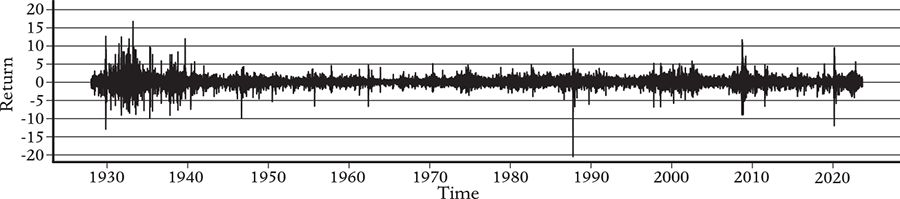
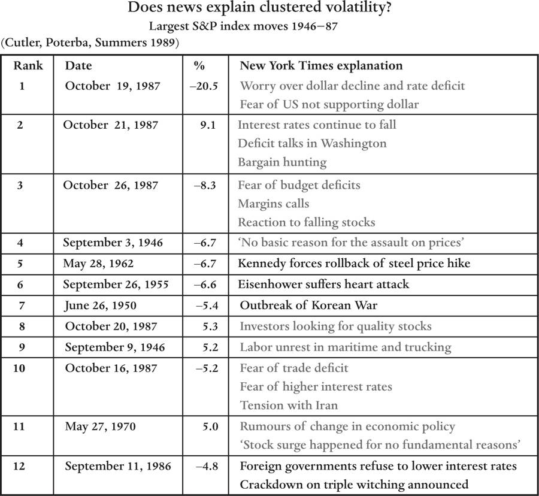

October: This is one of the peculiarly dangerous months to speculate in stocks. The others are July, January, September, April, November, May, March, June, December, August, and February.
The efficient-markets hypothesis also has implications about how prices respond to outside news. Markets have endogenous dynamics – prices change on their own, even without news affecting fundamental valuations. Put differently, markets make their own news.
1987 was an important year for complexity economics, for two reasons. First, it was the year of the SFI meeting on ‘The Economy as an Evolving Complex System’, mentioned in the introduction to Part I – a meeting that eventually led to the creation of two influential agent-based models that help us understand why prices behave as they do, and why market inefficiencies can cause market malfunction.
The second stimulus to complexity economics occurred later that year, on October 19, when the US stock market lost more than 20 per cent of its value in a single day. A drop in prices of this magnitude is huge: The stock market reflects the total worth of the biggest companies, whose value is a substantial share of the US economy. If you believe the market is always right, this means that almost a fifth of the value of the real economy disappeared in one day. Markets can change quickly: The real economy makes measurable changes every quarter or every year, whereas financial markets can change significantly in a day. The market normally changes by less than 1 per cent on any given day, so this event was twenty times bigger than normal.
What caused such a precipitous drop? For the fundamental value of the real economy to drop this much in one day, something really big would need to happen, such as the discovery that Earth might collide with an asteroid or that we were on the brink of nuclear war. But there was no real news that day. How could such a significant financial event come out of nowhere?
Before the 1987 crash, the biggest overall drop in the stock market occurred on October 28–29, 1929, when the market lost 25 per cent in two days. The Great Depression that followed profoundly affected the entire world and lasted for more than a decade, driving unemployment in the US to 25 per cent at its peak. The 1987 crash immediately caused everyone to worry that another Great Depression was on its way, provoking mass anxiety. But, nine months later, the stock market was back where it had been, and there were few long-term economic consequences.
While debates about the causes of the 1987 crash continue, most experts believe that automatic trading by computers, called program trading, played an important role.2 The following explanation is a bit technical, but it illustrates how the act of exploiting a small informational inefficiency can cause a huge allocational inefficiency. In this case the problem was the unstable feedback effects caused by the interaction of two specialized trading strategies.3
In the years leading up to the crash a new strategy called portfolio insurance was introduced, which was designed to insulate investors against a market crash. When the market goes into freefall, it can be hard to sell individual stocks at reasonable prices, whereas it is much easier to sell an S&P futures contract. (The S&P index consists of a basket of 500 large companies, and an S&P-index-futures contract allows the owner to buy the underlying stocks in the index at a given point in the future at a given price.) With portfolio insurance, when the market starts to fall, a computer automatically sells S&P futures on behalf of the owners of the insurance. The goal of the insurance is to raise cash and protect investors against losses due to sudden declines in the prices of the stocks in their portfolios.
The other trading strategy that caused problems, called index arbitrage, looks for discrepancies between the index’s underlying stocks and the index futures. If the underlying stocks in the index are overvalued relative to the index-futures price, index arbitrageurs sell those stocks. When the stocks in the index eventually once again match the index, they buy the stocks back and make a profit.
The interaction of these two strategies caused an unintended side-effect: During the crash, the use of portfolio insurance triggered an automatic response, creating a feedback loop that couldn’t be stopped, making the problem it was trying to protect investors against much worse. When the market dropped, the computers sold S&P index futures. The resulting market impact pushed the price of the S&P futures index down. Then index arbitrage kicked in. The market impact from this caused the prices of the stocks to drop even further. The combination of portfolio insurance and index arbitrage meant that the more that prices dropped, the more shares were automatically sold, which meant that prices dropped even more, and so on, throwing the market into a death spiral. Combined with the fact that investors were already nervous that the market was overvalued, this caused an enormous crash, which was only stopped when prices got so low that there were huge bargains. The brave souls who stepped in made enormous profits.
Thus we see how the unanticipated interaction between an innovation that was designed to reduce risk and a profit-making strategy that normally makes the market more efficient resulted in a gigantic departure from market efficiency: What probably should have been a small downward correction in prices turned into Armageddon.4 Even the most sophisticated investors aren’t fully rational, and almost no one anticipated this outcome. The crash offered dramatic evidence that markets can be far from efficient, and it provided a great example of systemic risk – in this case, an unanticipated (negative) emergent property of a market caused by a poorly understood financial innovation.
Even though the economy recovered quickly, the 1987 crash permanently changed views about market efficiency. Before the crash, most financial economists were, as noted, strong believers in the theory of efficient markets. But the crash forced a careful reexamination of views about markets and their relationship to the real economy, and exposed the flaws of logic based on the idea that investors are rational. If investors had been perfectly rational, they would have foreseen the dangers of portfolio insurance and behaved very differently. Market failures occur precisely because investors are not rational. Despite this, rational-expectations equilibrium continues to be the dominant mainstream framework for understanding markets. In contrast, in Chapters 10 and 11 we’ll see how complexity economics offers a better framework for understanding why markets fail.
The October 1987 crash was just one remarkable event in a month full of them: Five of the ten largest changes in the US stock market between World War II and 1989 occurred around this time – an example of clustered volatility. Volatility refers to the amplitude with which prices vary, regardless of whether the movements are up or down. Clustered refers to the fact that large market moves tend to be bunched together. Most of the time, if the market is hot it’s likely to remain hot, and if it’s cool it’s likely to remain cool.
An example is shown in Figure 10, which shows the price returns for the S&P index on successive days from 1929 to 2023. The return is just a name for the relative change in price – if the price increases from 100 to 105, then the return is 5 per cent. The size of the vertical line is the return on a given day. The large moves are clustered together.

Without clustered volatility, large market movements like the 1987 crash would be impossible. Under Louis Bachelier’s random-walk theory, if the step sizes of the drunk are all the same and he takes many steps, the distribution of possible distances he can be from the tavern after a given number of steps follows a bell curve – that is, a normal distribution. If the drunk takes n steps, each of size 1, then he can potentially be found a distance n away from the tavern, but his typical distance away is only the square root of n. For example, if n = 10,000, his typical distance away is 100 steps. Because it’s extremely unlikely that all his steps are in the same direction, finding him at a distance 10,000 steps away from the tavern is so rare that for all practical purposes it never happens. Similarly, if daily stock returns followed a normal distribution with a typical size of 1 per cent, a movement of 20 per cent would be essentially impossible.
Because of clustered volatility, a more accurate model of stock prices has to take into account the drunk’s changing moods. When he’s feeling energetic, he takes large, rapid steps; when he’s lethargic, he takes slow, small steps.5 If he’s in a particularly energetic mood, he may suddenly move a long way from the tavern. The distribution describing the size of his steps in markets has fat tails, meaning that large moves are far more common than they are for the thin-tailed, normal distribution. While really large movements like the 1987 crash are rare, they do happen a few times a century.
According to models based on rational-expectations equilibrium, any variation in the size of price returns must be due to new information, so large market moves should correspond to important new information. If stock-price movements show clustered volatility, this must be due to the clustered volatility of this new information. But, as we have already seen, there was no discernible news-related cause for the mammoth 1987 crash.
To test whether changes in stock prices are driven by news, the well-respected economists David Cutler, James Poterba and Larry Summers published a paper in 1989 entitled ‘What Moves Stock Prices?’6 Summers, who went on to become President of Harvard and Secretary of the Treasury under Clinton, had attended the 1987 ‘Economy as an Evolving Complex System’ meeting at SFI. I’ve always wondered whether that conference had any influence on his 1989 paper. Summers has a remarkable pedigree as an economist, being the double nephew of two of the most famous economists who ever lived, Kenneth Arrow on his mother’s side and Paul Samuelson on his father’s.
Cutler, Poterba and Summers began by finding the 100 largest daily fluctuations in the S&P 500 index between 1946 and 1987. They then looked at the New York Times on the day after each move and recorded a summary of the paper’s explanation for the price change. The authors made a subjective judgment as to whether these explanations could plausibly be considered ‘real news’ – or at least real enough to have triggered a sizable change in stock price. The New York Times’s explanations for the dozen largest daily price moves are shown in Figure 11.
The explanations for the 20 per cent drop on October 19, 1987, were ‘worry over dollar decline and rate deficit’ and ‘fear of US not supporting dollar’. Cutler, Poterba and Summers didn’t classify this as news, and I agree. ‘Worry’ and ‘fear’ are subjective statements about the emotional state of the market that have no specific reference to external events. Markets are a place where worry and fear are appropriate and normal emotions. If your investment advisor is not worried about losing your money, you should fire her.

The first example of real news among their list is the fifth-largest price movement, on May 28, 1962; the news that day was ‘Kennedy forces rollback of steel-price hike’. This is something that happened outside the market which should have affected investor decisions. Other examples of significant news items are ‘Eisenhower suffers heart attack’ and ‘outbreak of Korean War’. Of the dozen largest price fluctuations, only four were attributed to real news events, a ratio that they found also roughly applied to the largest 100 moves.
Their paper offers strong evidence that the market frequently makes its own news – that is, it often operates according to its own internal dynamics rather than responding to external events. The clustered volatility of the market is also evidence of this phenomenon: The three largest moves between 1946 and 1987, and five of the twelve largest moves during those years, all occurred during October 1987. The market was extremely volatile that month, but none of the fluctuations were driven by external news. You might also notice that nine of the twelve biggest movements were negative. Prices go down faster than they go up!
Some of the explanations for these biggest fluctuations stand out. The reason given by the New York Times for the fourth largest move, on September 3, 1946, was ‘no basic reason for the assault on prices’. I doubt that explanation will ever appear in the New York Times again, even if it’s true; the press always gives a reason, whether or not it’s justified. Perhaps journalists were more honest in the old days? Another good explanation was ‘investors looking for quality stocks’. Did they mean to imply that on other days investors were looking for inferior stocks?
Cutler, Poterba and Summers’s conclusions have since been further substantiated.7 Subsequent studies refute the efficient-markets hypothesis (at least in terms of allocational efficiency). While news events can influence stock prices, the majority of price movements have little to do with current affairs. Markets appear to have their own internal dynamics.
Can we measure financial-market efficiency in quantitative terms? This question was put to a panel of experts at a three-day conference that John G. and I organized at SFI in May of 2000, called ‘Beyond Equilibrium and Efficiency’. We invited a group of leading financial economists – including leading behavioral economists, such as Robert Shiller and Richard Thaler – along with leading econophysicists and complexity economists. The mainstream economists spoke on the first day, the complexity economists and econophysicists spoke on the second day, and the third day was for discussions. This proved to be a naïve way to organize the conference: Almost all the mainstream financial economists skipped the second day and went sightseeing. As a result, the discussion on the third day was not very enlightening.
Nonetheless, we did have a lively formal debate about market efficiency on the evening of the conference dinner. There were two teams, with three people arguing in favor of market efficiency and three arguing against. The latter team consisted of Shiller, Sanford (Sandy) Grossman and me. As measured by the crowd reaction among the mainstream figures, we lost the debate. It wasn’t even close. This was in part because my two teammates largely agreed with the other side. Somehow, during the discussion, a consensus emerged among the mainstream economists that ‘markets are about 97 per cent efficient’. As they would freely admit, we don’t have a good way to measure deviations from efficiency in quantitative terms. Looking back, the debate was confused by the fact that we weren’t clear about what this really meant.
In hindsight, I would answer that the efficiency of the market depends on which kind of efficiency you are talking about. It is indeed hard to beat the market. The fact that the signal-to-noise ratio of strategies like Prediction Company’s are about 1:20 indicates that markets are close to informational efficiency. But the Cutler, Poterba and Summers result indicates that only about a third of daily market movements occur in response to meaningful external events. This suggests that, from an allocative point of view, the market is about 33 per cent efficient. My favorite summary of this dichotomy is due to Fischer Black, one of the inventors of options pricing. In a paper titled simply ‘Noise’, he made a tongue-in-cheek statement that I will paraphrase as, ‘I believe in efficient markets: prices are within a factor of two of fundamental values 90 per cent of the time.’8 By this he meant that, yes, prices loosely reflect fundamental values, but they often fail to do so very well. This was borne out in a 1981 paper by Robert Shiller, who compared the Dow Jones index to the valuation of the companies in the index based on their dividends.9 The correct way to compute fundamental values is debated, but Shiller’s study suggests that prices make large swings from fundamental values, indicating that markets are on average less than 50 per cent efficient. (Which is why I was particularly disappointed when he agreed with the 97 per cent argument.)
This is not just an esoteric debate. As we will see in the next chapter, the fact that markets can stray far from fundamental prices on their own means they can malfunction, misguiding the economy. As the crisis of 2008 showed, this can have serious consequences, like causing unemployment to surge. Acknowledging that markets are inefficient could lead us to theories that would help us understand what causes malfunctions so that we can better guide our economy.
While the Cutler, Poterba and Summers paper is widely cited, its main lesson seems not to have been fully absorbed by mainstream economists. To my knowledge, no extant equilibrium model offers a reasonable explanation for clustered volatility that is consistent with their results. The only models that plausibly explain it – those we are about to discuss – allow the market to be out of equilibrium.
The Cutler, Poterba and Summers study suggests that it is ‘as if’ the market has moods. What causes them? Several of the early complexity-economics models explain this ‘moodiness’.
Brian Arthur and John Holland were among those in attendance at the 1987 SFI meeting. Though never really part of the mainstream, Arthur was an economist at Stanford at the time. Holland was a computer scientist and one of the founding figures of complex-systems science and machine learning, whom I had come to know well after inviting him to visit Los Alamos in 1982. After the 1987 meeting, the two of them teamed up with Blake LeBaron, an economist who was then a graduate student of José Scheinkman and now teaches at Brandeis University, and the physicist Richard Palmer. These four reconvened at SFI in subsequent years and formed an interdisciplinary research team seeking ways to explain clustered volatility in financial markets. They built an agent-based model for financial markets now called the Santa Fe Artificial Stock Market model.10 Their goal was to understand what causes the market to stray from equilibrium and make its own news. To do this, they built a computer simulation of a market with heterogeneous agents using diverse investment strategies.
The model’s agents were simulated traders, who were offered a choice between investing in a stock or a bond. The stock paid dividends of variable size, while the bond paid a steady (but lower) interest rate. Each simulated trader was a boundedly rational agent with an ‘artificial brain’ based on a machine-learning algorithm, invented by John Holland, called a classifier system.11 Their artificial brains allowed them to form their own expectations and make decisions based on past experience. The agents could choose their source of information. They could take account of the recent behavior of prices, and base their decisions on these and other technical indicators, or they could base their decisions on fundamentals, such as dividend payments, or they could do both. Unlike a real market, which is full of unknowns, in the Santa Fe Artificial Stock Market the researchers were like gods: They knew everything about their artificial world because they had created it themselves. They knew the statistical process by which the stock paid dividends. This allowed them to experiment with imbuing all the simulated traders with perfect rationality by overriding the classifier system and replacing it with expectations that were objectively correct within their artificial world. When they did this, as expected, the market obeyed the rational-expectations equilibrium: The stock price stayed near the correct valuation based on its dividend stream and fluctuated only when new information arrived. In this experiment, the market was perfectly efficient and everything happened just as rational expectations predicts it should.
However, when the agents in the model lost their divine guidance and became boundedly rational, forming their own views with the classifier system, the market’s behavior became more realistic. In this case, current and future prices remained largely uncorrelated, as they are in the real world (and as predicted by rational expectations). However, the volatility of prices was much higher than predicted by rational expectations (as it is in the real world). Furthermore, the volatility was clustered – quiet periods were interspersed with bursts of noisy behavior, as happens in a real market. The market appeared to be making its own news, just as Cutler, Poterba and Summers’s study says the real market does. The clustered volatility of the Santa Fe Artificial Stock Market model was an emergent property, generated by the interactions of the market with itself.
To figure out what caused the clustered volatility, the researchers could look inside the brains of their artificial traders. They found that the artificial traders spontaneously formed an ecosystem of specialists. Some of them became value investors, focusing their attention on understanding the dividend stream. Others became technical traders, dedicated to understanding patterns in prices. Many of these technical traders were trend followers, who bought the stock whenever its price started to trend upward and sold it when it trended downward. The relative proportions of value investors and technical traders fluctuated: When the trend followers became active, the market was volatile; when they were inactive, it was quieter. Individual artificial traders sometimes switched between these two strategies, but most of them chose a strategy and stuck with it.
The Santa Fe Artificial Stock Market was a complicated model, requiring serious software effort to reproduce. In parallel research, published around the same time, William ‘Buz’ Brock of the University of Wisconsin and the Dutch mathematician/economist Cars Hommes found similar results using a much simpler model.12 Their model’s set-up was similar to that of the Santa Fe Artificial Stock Market model; the agents chose between a stock and a bond. But in the Brock-Hommes model, agents were given an explicit choice between a value-investor rule and a few simple technical trading rules. They could monitor the success of each rule and switch to the ones that recently performed best. At different times, different rules tended to dominate. Brock and Hommes observed clustered volatility and fat tails in price returns, just as in the Santa Fe Artificial Stock Market model.13 Since these models came out, many other agent-based models have explored similar ideas and confirmed the same basic results. The best models achieve a good quantitative match to real data, generating uncorrelated directional price movements, clustered volatility and price-movement distributions that closely match real markets.
The underlying explanation of this behavior is essentially ecological. During calm periods, the fundamentalists dominate. However, if for some reason prices happen to move in the same direction several times, trend followers start to do well, more of the agents are attracted to trend following and their influence on the market grows. This generates a positive feedback loop, launching a boom in which prices exceed fundamental values, which causes the value investors to sell. When the trend followers eventually run out of new capital, the upward trend falters, and, when prices drop, the trend followers start selling too, and prices converge toward fundamental values again.
These models provide a plausible explanation for the lack of correspondence between price movements and news. In Chapter 11, we will explore another family of agent-based models – those that study the implications of the use of credit, which also leads to clustered volatility. Both families of models assume bounded rationality and allow deviations from equilibrium.
There are two reasons that agent-based models for markets haven’t received much attention from mainstream economics. The first is that, like any agent-based model, they run counter to the central tenets described in Chapter 5. Another, better reason is the lack of useful quantitative predictions. These models provide an explanation for why clustered volatility occurs, and they do a good job of matching the statistical properties of real markets, but so far they have no useful practical applications.
This is changing: For example, it was recently shown that models of this type can provide better predictions of clustered volatility than standard models.14 They are also beginning to be used by banks to understand and even predict systemic market failures, and I am hearing more and more rumors that some hedge funds are using them. We’ll discuss these practical developments at the end of Chapter 11, but, before we do so, it’s worth further developing the conceptual framework provided by my theory of market ecology, which helps explain how and why markets deviate from efficiency, and how this can cause them to malfunction.